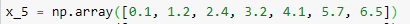

Transpose Method and 2d Arrays

We can convert this variable to the shape of 7 rows and 1 column by adding another [] inside the array params. This will convert this into the shape of (1, 7) and to invert this number, we use transpose() method::: (7, 1)

Another way of doing is through the reshape() method.